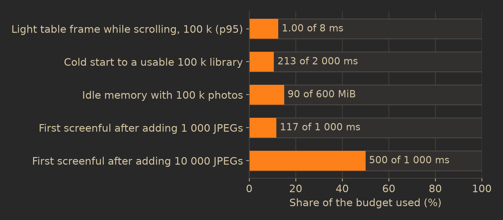
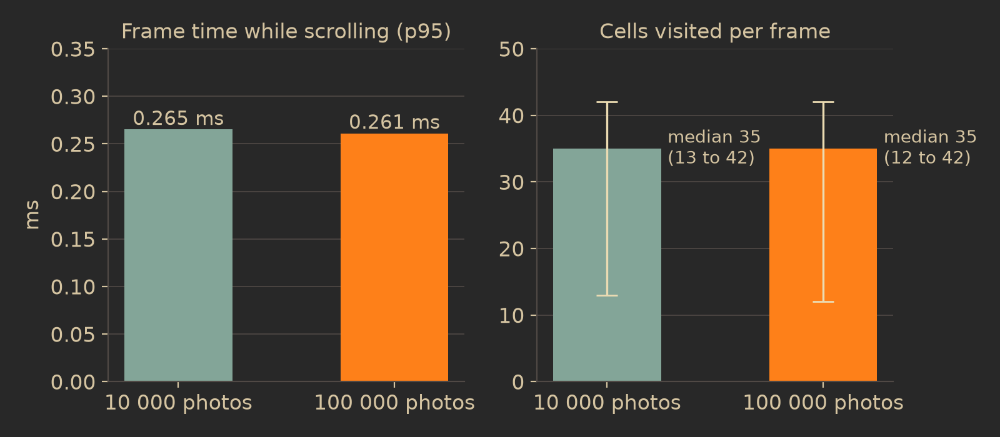

Big libraries
Dalíca is built and measured against a library of 100,000 photos. This chapter gives the measured numbers, explains which costs grow with your library and which stay flat however large it gets, and says exactly where each number comes from.
The 100,000-photo measurements
Every milestone ends with a review at which a fixed set of performance budgets is run in release builds on the maintainer's workstation (an Intel i7-13700K with 24 hardware threads and 31 GB of memory, running Fedora). A missed budget has to be fixed, or explicitly raised by the maintainer, before the release ships. These are the large-library numbers from the review of version 1.1 (2026-11-06):
| Scenario | Measured | Budget |
|---|---|---|
| A light table frame while scrolling 100,000 photos (95th percentile) | 1.00 ms | 8 ms |
| Cold start: a new process opening a 100,000-photo library to its first settled frame (median of five) | 213 ms | 2 s |
| Resident memory of that process after 5 s idle | 90 MiB | 600 MiB |
| First screenful of thumbnails after adding a folder of 1,000 JPEGs | 117 ms | 1 s |
| The same, for a folder of 10,000 JPEGs | 500 ms | 1 s |
| Every photo's color summary made from its stored sketch when a 100,000-photo library indexed before 1.1 is opened | 950 ms | 1,445 ms |
color:green over 100,000 photos | 2.9 ms | 5.4 ms |

Memory is the easiest number to read per photo: 90 MiB for a library of 100,000 photos is under 1 KB per photo, and that figure includes the program itself, its fonts, its window state and every fixed-size cache. Of the per-photo part, the color sketch held for every photo takes about 4.8 MB in all.
More measurements at 100,000 photos
These come from the benches' first measurements, recorded in the development docs, on two hardware threads of the same machine (one performance core) unless noted:
- Scrolling, at an earlier milestone (2026-10-11): frame times of 0.234 ms at the median, 0.261 ms at the 95th percentile and 0.737 ms at worst while scrolling 100,000 photos. The light table has gained captions, badges, accessibility and themes since, which is why the 1.1 number is higher; both are far inside 8 ms.
- The speed-control thumb at its top speed through 100,000 sketched photos: 0 gray placeholder cells in 5,317 frames, frame p95 0.31 ms. Through a fully scanned 100,000-photo library with thumbnails: 0 placeholder cells, frame p95 0.75 ms.
- Cold start in detail (2026-10-15): 239 ms at the median of five runs, 315 ms for the slowest, of which reading the index took 204 ms and the rest three frames; idle memory 83 MiB.
- Scanning 5,000 JPEGs of 1,024 pixels into a new library: every photo in the library with its header read in 0.48 s, 10,325 photos per second on two threads (22,739 on all 24). Making every 128 and 256 thumbnail of those photos took 21.4 s on two threads (233 photos per second; 1,470 on all 24). A scanned 100,000-photo library with all its thumbnails was made in 30.3 s on all cores (3,299 photos per second).
- Search (2026-10-14), on a library of 100,000 photos in 1,000 folders with a caption on every photo, tags, and 100 albums: building the search index 417 ms, a one-word search 1.12 ms (13,441 matches), three words with Starred on 0.38 ms, a lone
-word3.39 ms (86,559 matches), and from the search box's change to its result on screen 14.9 ms. The first search of a session also copies the library to the search worker and builds the index: 757 ms. - The folder tree for 5,000 folders and 100,000 photos: 3.0 to 4.3 ms flat, 6.7 to 7.3 ms as a tree. The tag index for 100,000 photos with 5 tags each: 110 ms. Both are built once per change of the library, not per frame.
- Batch Edit: Auto Fix applied to 1,000 photos as one undo step in 4.65 ms, and undone in 3.31 ms.
What grows with the library, and what does not
The design rule is that work proportional to the size of the library may happen when the library changes or when it opens, but never in a frame. A frame touches only what is on screen.

| Grows with the library | Stays flat |
|---|---|
| The index on disk: about 157 bytes per photo in the test library's snapshot with sketches (15.67 MB at 100,000), and reading it at open (204 ms of the cold start) | A frame's cost and the cells it visits |
| The library model and sketches in memory | Decoded thumbnails in memory: a fixed 192 MiB, least recently used first out |
| Building the search index, the folder tree and the tag index, once per change | The thumbnail cache on disk: 2 GiB by default, pruned to 80 % |
| A verification walk of your folders, bound by the disk | Work applied per frame: at most 500 photos from a scan and 256 finished jobs |
| The time until every thumbnail exists (minutes for a first scan of a large library) | The time until the first screenful of thumbnails, since visible cells jump the queue |
The first scan of a big library is the one cost you can feel: making 100,000 sets of thumbnails is minutes of work for any program. Dalíca keeps it off your path. The library is usable from the first folder, cells on screen are served first, and every cell can draw its sketch from the moment the scan reaches it. Once the thumbnails exist, opening the library again reads only the index.
Per-frame rules
A frame has 8 ms to stay smooth on a 120 Hz display, and these rules keep the work inside it independent of the library's size:
- The owner thread never waits. The thread that draws the window never decodes an image, never touches the file system, never waits on a lock held by a worker and never blocks on a dialog. In test builds every file call made from it fails, so a violation shows up as a failed test rather than a stutter. Answers needed while painting (does this folder exist, is this drive online) come from caches that workers fill.
- Everything derived is cached per revision. Every change to the library bumps its revision number. Tree rows, the light table's layout, counts and search results are computed once per revision and reused by every frame until the next change.
- Find what is visible, do not walk to it. The light table's section offsets are summed once per layout, in 64-bit floating point because a 100,000-photo library is millions of points tall. The section at the scroll position is found by binary search and the rows on screen by arithmetic, so a frame visits only the cells it shows.
- Background results arrive in slices. A scan's changes are applied at most 500 photos per frame, at most 256 finished thumbnail jobs are taken in per frame, and when more than 96 MiB of scan images are waiting, scans send only sketches until the owner catches up.
- Every cell can be drawn now. The color sketch of every photo is in memory, so no cell ever waits for the disk to draw something (the Thumbnails chapter has the details).
- Textures follow the view. Thumbnails become textures as they arrive; results that are no longer wanted are dropped, and prefetch the view has moved away from is cancelled.
Where the numbers come from
Every number in this chapter is a measurement recorded in the repository, with its machine, date and conditions: docs/development.md §8 gives each budget with its first measurement and how it was taken, and docs/status.md records each review's results in its Metrics table and milestone summaries. Nothing here is an estimate.
- The benches
library_bench(crates/ui) scrolls, selects and builds the tree over a synthetic 100,000-photo library;cold_start(crates/ui) starts the real app in a headless driver on an index-only library of 100,000 photos in 1,000 folders, every photo sketched.first_thumbnailsandscan_throughput(crates/engine) scan real JPEGs written to a temporary folder.search,colour_summaryandbatch_edit(crates/engine) andpack(crates/thumbs) cover the rest.- How a budget is set
- Most budgets are 1.5 times the first measurement, taken as the median of three runs in one sitting on two hardware threads (
taskset -c 0,1, one performance core). A few are fixed targets that never move: 8 ms per frame, 2 s to start a 100,000-photo library, 600 MiB idle, 1 s to the first screenful, at least 500 photos per second scanned, and zero gray cells at top scroll speed. Budgets only ever tighten or stay; loosening one is the maintainer's decision. - How a budget is judged
cargo xtask budgetsbuilds in release, runs every budget, prints each row's verdict and fails when one is missed. It is checked against itself:--plant-ms 8adds a planted 8 ms slowdown to every frame and must make the frame budgets fail. The cold start leaves out the window and GPU setup, and the page cache is warm, since the files were just written.- On your own machine
- Help > Stats for Nerds shows resident memory, the thumbnail memory budget, the thumbnail cache's size per ladder size and hit rate, the library folder's files, and the last scan's duration and files per second. Starting Dalíca with
DALICA_PROFILE=1logs every frame slower than 8 ms with what it touched: cells, section headers and tree rows laid out, and thumbnail jobs asked for.
Caveat: the numbers were measured on a fast desktop with an NVMe disk and a warm file cache. A library on a spinning disk or a network share scans and verifies more slowly, since those walks are bound by the disk. The frame rules do not depend on the disk at all, which is the point of keeping it off the drawing thread.
In the code
- docs/development.md §8 (performance budgets and their first measurements) and §10 (profiling with DALICA_PROFILE=1).
- docs/status.md: the M16.R numbers and the Metrics table (the M4 and M5 rows for scrolling, the thumb at top speed, the pack and the sketch).
- docs/architecture.md §4 to §6: revisions, threading and the never-blank layers.
- crates/ui/benches/library_bench.rs and cold_start.rs; crates/engine/benches/first_thumbnails.rs, scan_throughput.rs, search.rs, colour_summary.rs, batch_edit.rs; crates/thumbs/benches/pack.rs.
- xtask/src/accept.rs (BUDGETS and the judges of cargo xtask budgets).
- crates/ui/src/panels/light_table/layout.rs (prefix sums and binary search), crates/ui/src/perf.rs (per-frame counters), crates/engine/src/thumbs.rs and scanning.rs (the per-frame limits).